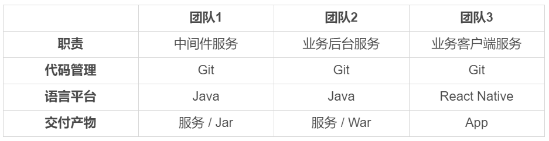

- 00 开篇词 量身定制你的持续交付体系.md
- 01 持续交付到底有什么价值？.md
- 02 影响持续交付的因素有哪些？.md
- 03 持续交付和DevOps是一对好基友.md
- 04 一切的源头，代码分支策略的选择.md
- 05 手把手教你依赖管理.md
- 06 代码回滚，你真的理解吗？.md
- 07 “两个披萨”团队的代码管理实际案例.md
- 08 测试环境要多少？从现实需求说起.md
- 09 测试环境要多少？从成本与效率说起.md
- 10 让环境自己说话，论环境自描述的重要性.md
- 11 “配置”是把双刃剑，带你了解各种配置方法.md
- 12 极限挑战，如何做到分钟级搭建环境？.md
- 13 容器技术真的是环境管理的救星吗？.md
- 14 如何做到构建的提速，再提速！.md
- 15 构建检测，无规矩不成方圆.md
- 16 构建资源的弹性伸缩.md
- 17 容器镜像构建的那些事儿.md
- 18 如何做好容器镜像的个性化及合规检查？.md
- 19 发布是持续交付的最后一公里.md
- 20 Immutable！任何变更都需要发布.md
- 21 发布系统一定要注意用户体验.md
- 22 发布系统的核心架构和功能设计.md
- 23 业务及系统架构对发布的影响.md
- 24 如何利用监控保障发布质量？.md
- 25 代码静态检查实践.md
- 26 越来越重要的破坏性测试.md
- 27 利用Mock与回放技术助力自动化回归.md
- 28 持续交付为什么要平台化设计？.md
- 29 计算资源也是交付的内容.md
- 30 持续交付中有哪些宝贵数据？.md
- 31 了解移动App的持续交付生命周期.md
- 32 细谈移动APP的交付流水线（pipeline）.md
- 33 进阶，如何进一步提升移动APP的交付效率？.md
- 34 快速构建持续交付系统（一）：需求分析.md
- 35 快速构建持续交付系统（二）：GitLab 解决代码管理问题.md
- 36 快速构建持续交付系统（三）：Jenkins 解决集成打包问题.md
- 37 快速构建持续交付系统（四）：Ansible 解决自动部署问题.md
- 持续交付专栏特别放送 答疑解惑.md
- 持续交付专栏特别放送 高效学习指南.md
- 结束语 越痛苦的事，越要经常做.md
34 快速构建持续交付系统（一）：需求分析
从今天这一篇文章开始，我们就进入这个专栏的最后一个系列：实践案例系列了。在这个系列里，我将通过4篇文章，以实际操作为主，带你快速构建一套持续交付系统。
当然，首先我们要做的是，一起整理一下思路，看看我们的系统具体要满足哪些实际的需求，需要具备什么功能。然后，建立需求的锚点，根据这些锚点，展开具体的搭建工作。
因此，在这篇文章中，我会以先介绍模拟团队和项目，再提出具体持续交付需求的思路，罗列一些要模拟的背景，并为你解说这些场景。这样做，可以帮助你在后面的三篇实践文章中找到对应的需求点，也可以让你与现在团队的持续交付体系作一番比较，找到相通之处，从而加深你对持续交付体系的理解。
模拟团队介绍
我在第7篇文章《“两个披萨”团队的代码管理实际案例》中，和你分享了“两个披萨”团队的代码管理实践。基本上，我们可以把一个这样的团队看作是一个微型研发团队。虽然这样规模的一个团队也可以很好地运用我们即将搭建的持续交付系统，但是因为过于理想化而缺乏了典型性。
所以，为了更全面地介绍持续交付系统的搭建过程，我将要模拟的团队规模扩大至3个“两个披萨”团队的大小。即，整个产品的研发，需要由这3个团队合作完成。这3个团队的分工，如下图所示：

由这样3个团队组成的中小型研发组织架构，也是目前互联网公司比较流行的。
模拟系统介绍
介绍完模拟团队的情况，接下来，我们需要再了解一下需要模拟的系统。对于持续交付体系来说，系统的业务逻辑并不是要解决的最重要的问题。因为不管业务逻辑如何，持续交付的过程大致都是相通的，都包括了代码管理、环境管理、集成编译管理、测试管理和发布管理这五大步骤。
反而，系统之间如何集成运作，以及依赖关系、交付形式，关系着这持续交付系统应该如何实现，才是更重要的内容。
在这里，我们要模拟的这个系统，最终表现为移动App持续交付体系的形式，需要中间件、业务后台，以及业务客户端这3个团队交付产物的协作，才算是完整：
- 首先，用户通过团队3交付的移动App进行系统操作；
- 其次，移动App需要调用团队2提供的业务后台服务War，获取数据和处理业务逻辑；
- 最后，后台服务War需要依赖团队1提供的业务中间件Jar，完成底层操作，如配置读取、缓存处理等。
这三个团队的依赖关系和交付产物，也决定了他们要采用不同的交付方式：
- 团队1，有两类交付方式：
- 第一类是，中间件服务的交付，使用传统的虚机部署，提供可部署的代码包；
- 第二类是，中间件组件的交付，使用Jar包发布，发布到组件仓库。
- 团队2的交付方式是，后台服务使用Docker交付，部署在k8s集群上。
- 团队3的交付方式是，标准的 iOS App交付。
这也是目前比较流行的移动互联网系统的架构形式，当然其中也覆盖了目前流行的容器交付。如果你现在要在一个微型研发团队搭建这样的持续交付系统，那你也可以根据这样的架构形式做适当裁剪，去除一些不需要的功能，顺利达成持续交付的目的。
主体流水线的需求
模拟团队对整个持续交付流水线的需求如下图所示：
整个过程可以大致描述为：代码合并到master后能够自动触发对应的集成编译，如编译通过则部署到对应的测试环境下，部署成功后驱动自动化测试，测试通过则分批部署到生产环境。
主体流水线发生的状态变更，都需要通过E-mail通知发起人。这里的发起人就是代码提交者和合并审核人。
这条主体流水线，看上去很简单、功能明确。但是，麻雀虽小五脏俱全。因此，各个步骤还都有一些细节实现上的要求。接下来，我们就一起看一下吧。
代码与配置管理相关的需求
3个模拟团队的代码分支策略均采用标准的 GitLab Flow 模型，要求是代码通过code review后才能合并入master分支；合并入master分支后，能够触发对应的集成编译。
同时，我们需要代码静态扫描服务，帮助我们更好地把控代码质量。这个服务的具体工作形式是：
因为代码扫描是异步处理的，所以扫描过程将在代码编译通过之后开始。而扫描结果，则作为是否可继续流水线的依据。
这里需要注意的是，整个代码扫描过程是异步进行的，所以在没有得到扫描结果前，主体流水线将继续进行。
如果主体流水线已经执行完，而代码扫描还没结束，也就是还没有得到扫描结果的话，整条流水线需要停下来等待；而如果在执行主体流水线的过程中，代码静态扫描的结果是不通过的话，那么就需要直接中断主体流水线的执行，此次交付宣告失败。
构建与集成相关的需求
我们对编译与集成的要求，具体可以概括为以下几点：
首先，能够同时支持传统的部署包、Docker镜像，以及移动App的编译和集成。而且能够在触发编译时自动进行适配支持，这样才能保证各个团队有新项目时无须再进行额外配置。
其次，所有构建产物及构建历史，都能被有效、永久地记录和存储。因为单从传统的编译驱动管理角度看，它以编译任务为基准，需要清除过久、过大的编译任务，从而释放更多的资源用于集成编译。但是，从持续交付的角度看，我们需要完全保留这些内容，用于版本追溯。
再次，各构建产物有自己独立的版本体系，并与代码commit ID相关联。这是非常重要的，交付产物的版本就是它的唯一标识，任何交付物都可以通过版本进行辨识和追溯。
最后，构建通道必须能够支持足够的并发量。这也就要求集成构建服务要做到高可用和可扩展，最好能做到资源弹性利用。
打包与发布相关的需求
要清楚打包与发布的需求，就需要先了解各个团队的部署标准和环境状况。
从这3个团队交付产物的角度来看，他们需要的环境，可以描述如下：
- 团队1，提供中间件服务。其测试服务器需要1个集群，2台虚拟机；生产环境需要2个集群，各7台虚拟机。
- 团队2 ，提供业务后台服务。其测试服务器需要1个集群，2个Docker 实例；生产环境需要2个集群，各7个Docker 实例。
- 团队3，交付移动App。其需要的环境就是内部测试市场。
整个发布体系，除了要考虑标准的War包和Docke镜像发布外，我们还要考虑Jar包组件的发布。因为团队1的Jar包对应有两类交付方式，所以对Jar包的发布，我们需要做一些特殊考虑：
-
测试环境可以使用Snapshot版本，但是生产环境则不允许；
-
即使测试通过，也不一定需要发布Jar包的每个版本到生产环境；
-
Jar包是发布到对应的组件仓库，发布形式与其他几类差别（比如，War包、Docker镜像等）较大。
基于以上的考虑，我们需要对Jar包的发布做特殊的系统处理。
另外，为了发布过程更加可控，我们需要对代码目录、进程管理、日志格式等进行统一的标准化。这部分标准化的具体内容，我将穿插在具体实现时再做详细说明。
自动化测试的需求
在这里，我们的自动化测试平台，选择的是TestNG，这也是业界最为流行的自动化测试平台之一。
对于测试，系统需要注意的是，不要有一个测试任务失败就中断交付，最好是跑完所有测试任务，并收集结果。当然，我们可以通过TestNG平台，很容易做到这一点。
相反，另外一点倒是我们要注意的，就是“停不下来”。比如测试脚本出现死循环。
除此之外，自动化测试过程中还会发生许多意想不到的事情，特别是造成了一些破坏，使得测试过程无法正常继续等情况。所以，我们需要能够处理这样的异常，比如加上超时机制，使持续交付系统能够继续正常运作。
总结
今天，我通过对要模拟的团队和系统的介绍，引出了我们即将实战搭建的这套持续交付系统的需求锚点。这里，我再概括一下整个持续交付体系的需求：
要模拟的团队有3个，分别为中间件团队、后端业务团队和移动App团队，3个团队最终产出一个可工作的移动App。
而模拟团队在持续交付主体流水线的需求下，对各个主要模块还有一些具体的需求：
-
代码与配置：需要code review，以及静态代码扫描；
-
构建与集成：能同时支持Jar、War、Docker，以及App，版本管理可追溯，支持高并发；
-
打包与发布：同时支持Jar、War、Docker、App的发布，以及统一的部署标准；
-
自动化测试：通过TestNG驱动，实现全自动测试。
从下一篇文章开始，我会通过开源工具和你一起解决这些需求，最终完成成这套系统的搭建。
思考题
在这一篇文章中，我们模拟的是一个比较完整的团队，而在实际项目中你的团队是不是更小？如果是的话，在建设持续交付体系的过程中，你会裁剪掉哪些需求呢？
感谢你的收听，欢迎你给我留言。
© 2019 - 2023 Liangliang Lee. Powered by Vert.x and hexo-theme-book.